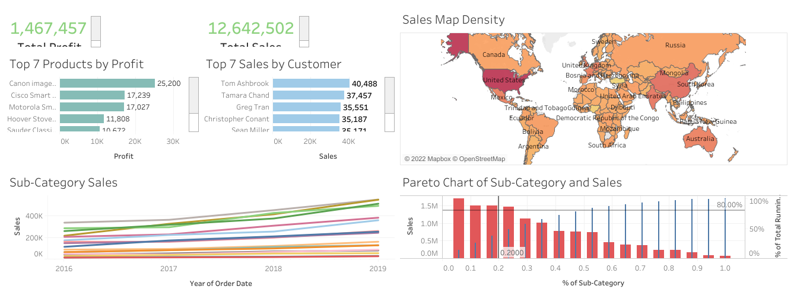

The COVID-19 data exploration project that show some interesting insight about the data. All the queries were made by using Ms. SQL Server Management Studio 18.
Python analysis with the purpose to identify and analyze the factor behind the resignation of the employee. There are also some graph, plot and bar that will help the company to improve their employee's experience.

This is my Tableau Dashboard 1 by using Superstore Sales data. This dashboard is using several graph and chart, such as Bar Graph, Density Map, Line Chart and also Pareto Chart. With these insightful dashboard, the company can make a better and faster decision. Check it out!

This is my Tableau Dashboard 2 by using Hardware Company Sales data. This dashboard is using several graph and chart, such as Bar Graph, Line Chart and also Date Feature. With these insightful dashboard, the company can make a better and faster decision. Check it out!